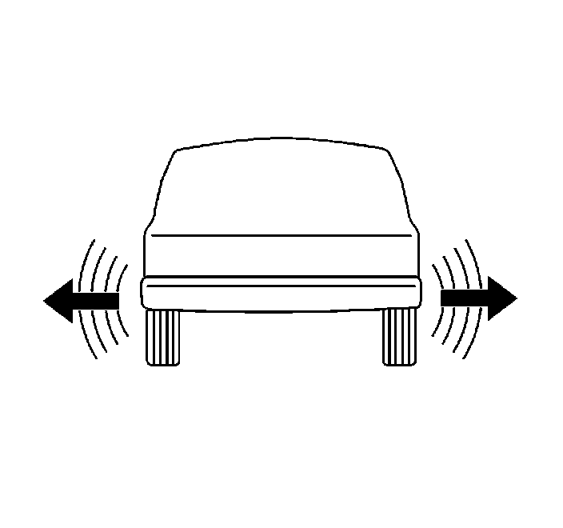

Tire Diagnosis - Waddle Complaint
Tire Diagnosis - Waddle Complaint
Tire Diagnosis - Waddle Complaint:

Tire waddle is a side to side movement at the front of the vehicle and/or the rear of the vehicle. Tire waddle can be caused by the following conditions:
^ A steel belt not being straight within the tire
^ Excessive lateral runout of the tire
^ Excessive lateral runout of the wheel
The tire waddle is most noticeable at a low speed of about 8-48 km/h (5-30 mph). Tire waddle may appear as ride roughness at 80-113 km/h (50-70 mph). Tire waddle may appear as a vibration at 80-113 km/h (50-70 mph).
Inspection Procedure
1. Raise and support the vehicle with safety stands. Refer to Lifting and Jacking the Vehicle.
Caution: Wear gloves when inspecting the tires in order to prevent personal injury from steel belts sticking through the tire.
2. Perform the following preliminary inspection:
1. Mark the tire with a crayon in order to note the start and the stop position.
2. Rotate each tire and wheel by hand.
3. Inspect the tire for bulges or bent wheels. Replace as necessary.
3. Use tire substitution in order to identify the faulty tire. Perform the following steps for a tire substitution check:
1. Use a comparable tire in order to replace each tire, one at a time.
2. Test drive the vehicle.
3. If the problem is tire or wheel related, you will eliminate the problem when you remove the faulty tire from the vehicle.